703308 VO High-Performance Computing
University of Innsbruck
(myRank - 1 + numRanks) % numRanks”MPI_(DATA_TYPE_THAT_DOESNT_EXIST_YET)MPI_BYTE everywhere?int is unknown (C standard only defines minimum requirements!)int on machine A and int on machine B might have different sizesizeof() constructsMPI_BYTE/… everywhere deprives you of all of the above
MPI_FOOBARMPI_Type_create_struct(…)
MPI_Type_vector(…)
MPI_Type_create_subarray(…)
MPI_Type_contiguous(…)
count: number of blocksblocklengths: number of elements per block (array)displacements: starting address of first element of each block (array)types: type of each block (array)newtype: resulting derived datatypeoffsetof() instead!MPI_Aint (programming language data type) and MPI_AINT (MPI data type)MPI_BOTTOM as the buffer argument, enables use of absolute addresses as displacements instead of offsets
MPI_Aint is a signed integer (overflow behavior is not defined), absolute addresses are unsigned (overflow behavior is defined)typedef struct {
int barInt;
double barDoubleA;
double barDoubleB;
} Foo;
MPI_Datatype myType;
int blocklengths[2] = { 1, 2 };
MPI_Aint displacements[2] =
{ offsetof(Foo, barInt),
offsetof(Foo, barDoubleA) };
MPI_Datatype datatypes[2] =
{ MPI_INT, MPI_DOUBLE };
MPI_Type_create_struct(2, blocklengths,
displacements, datatypes, &myType);
MPI_Type_commit(&myType);(min, max)-tuples to another rank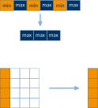
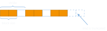
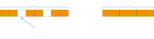
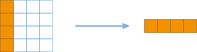
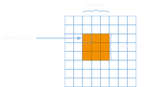
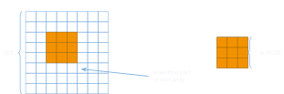
INT_MAX elements (count parameter type in MPI_Send/Recv/… is only int!)MPI_Pack(…) and MPI_Unpack(…) functions
MPI_Type_free(…) once you no longer need the type
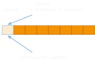
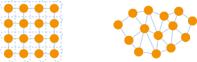
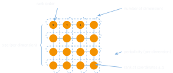
MPI_Dims_create()comm_old: current communicatorndims: number of dimensionsdims: size, per dimensionperiods: periodicity (0 = open, 1 = periodic), per dimensionreorder: reorder rank numbers (0 = false, 1 = true)comm_cart: new communicator with Cartesian topologyMPI_Cart_shift())MPI_PROC_NULL if neighbor does not exist
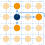
MPI_Cart_sub())MPI_Bcast(…, A) only affects ranks of A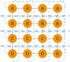
MPI_Cart_coords(…)
MPI_Cart_rank(…)
MPI_Cart_sub(…)
MPI_Cartdim_get(…) / MPI_Cart_get(…)
MPI_Neighbor_allgather(…) / MPI_Neighbor_alltoall(…)
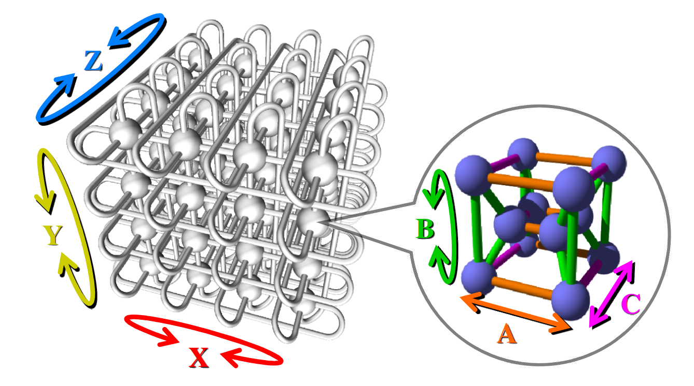
int problem-O0 (but also with -O2) on LCC2long long loop iterators to int halves execution timeint problem cont’dprofiled with gprof to find “hot spots”, left is int, right is long long
int problem cont’d74 // get temperature at current position
75 value_t tc = A[i];
76
77 // get temperatures of adjacent cells
78 value_t txl = (i % Nx != 0) ? A[i - 1] : tc;
79 value_t txr = (i % Nx != Nx - 1) ? A[i + 1] : tc;
// ...... snip ......
90 if (Ny > 1)
91 B[i] = tc + 0.165 * (txl + txr + tyl + tyr + tzl + tzr + (-6 * tc));
92 else
93 B[i] = tc + 0.2 * (txl + txr + tzl + tzr + (-4 * tc));int problem cont’dfar-fetched idea, but maybe branch (mis-)predictions? compared with perf stat:
2328.650634 task-clock:u (msec) # 0.996 CPUs
0 context-switches:u # 0.000 K/sec
0 cpu-migrations:u # 0.000 K/sec
186 page-faults:u # 0.080 K/sec
5,739,935,525 cycles:u # 2.465 GHz
10,671,532,880 instructions:u # 1.86 IPC
1,196,623,336 branches:u # 513.870 M/sec
1,030,678 branch-misses:u # 0.09%
2.338387625 seconds time elapsed 4639.728721 task-clock:u (msec) # 0.998 CPUs
0 context-switches:u # 0.000 K/sec
0 cpu-migrations:u # 0.000 K/sec
186 page-faults:u # 0.040 K/sec
11,444,184,736 cycles:u # 2.467 GHz
10,972,976,005 instructions:u # 0.96 IPC
1,196,977,569 branches:u # 257.984 M/sec
1,030,347 branch-misses:u # 0.09%
4.650327844 seconds time elapsedint problem cont’dvalue_t txl = ( i % Nx != 0 ) ? A[i-1] : tc;
int problem cont’d| inst. | operands | µops | latency |
|---|---|---|---|
idiv |
r32 |
10 | 26 |
idiv |
r64 |
57 | 42–95 |
int problem cont’d% operator to get boundaries (which are strided in linearized space)>, <, ==, !=)int problem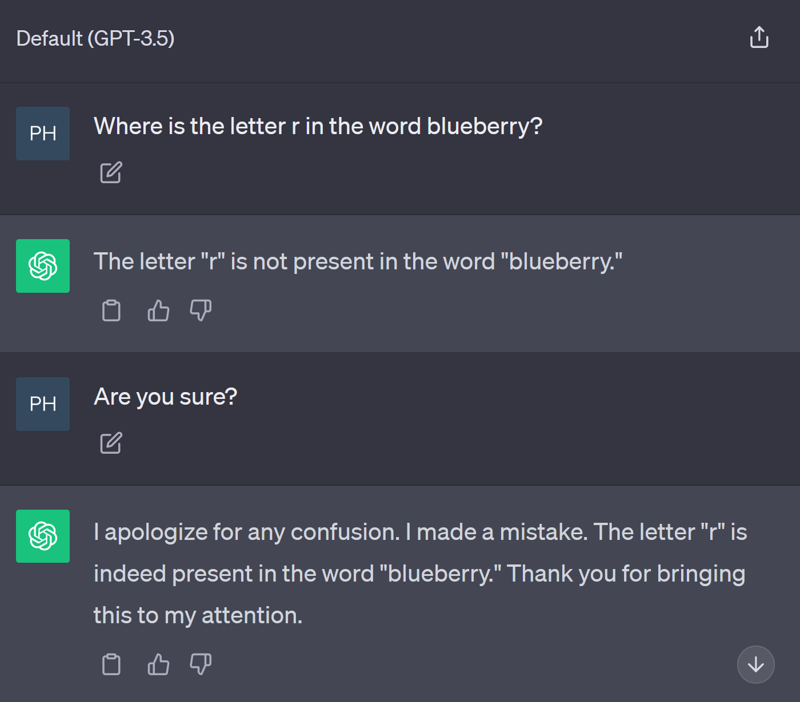
comm: communicator (must have Cartesian topology!)direction: dimension along which to select neighborsdisp: displacement/distance to neighborsrank_source: neighbor for which the calling rank is the destinationrank_dest: requested neighbor for the calling rankcomm: current communicator (must have Cartesian topology!)remain_dims: which dimensions to keep in sub-grid (0 = drop, 1 = include)newcomm: new communicator holding only ranks of this slice703308 VO High-Performance Computing — MPI derived datatypes & virtual topologies